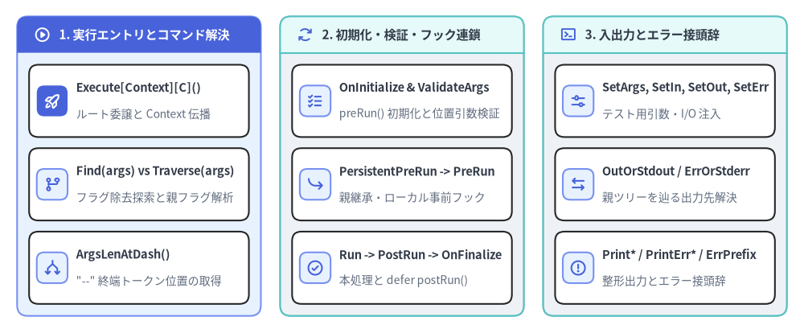
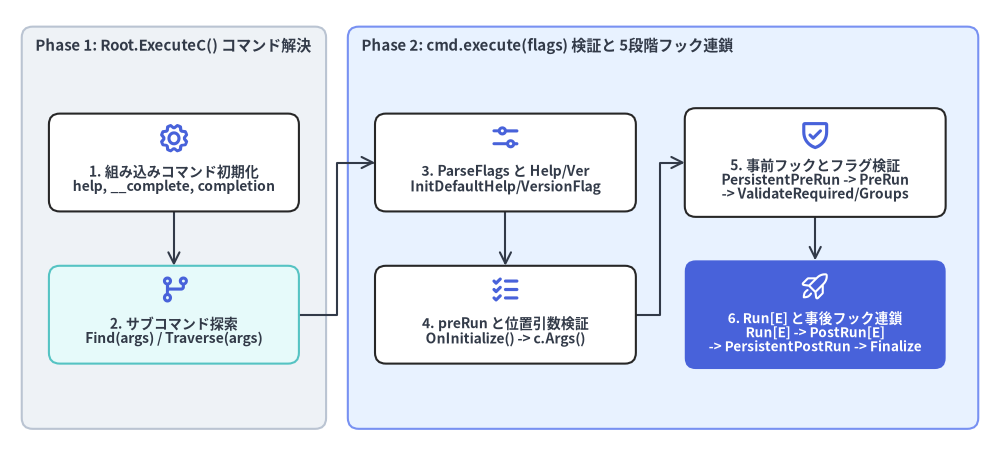

コマンド実行・解決アルゴリズム・I/O ストリーム
本章では、command.go および cobra.go で定義されている実行エントリポイント（Execute*, Context）、コマンドツリー解決アルゴリズム（Find と Traverse）、グローバルライフサイクルコールバック（OnInitialize, OnFinalize, EnableTraverseRunHooks）、およびテスト容易性を支える I/O ストリーム制御メソッド（SetArgs, SetOut, SetErr, SetIn, Print*, ErrPrefix）を解説します。

Source Code
from drawlib.canvas import save, setup
from drawlib.icons import phosphor
from drawlib.smartarts import CardList, Panel
from drawlib.styles import Colors, Styles
setup(width=188, height=78)
_ = Colors
col_specs = [
(
4.0,
"1. 実行エントリとコマンド解決",
Styles.PrimaryNeutral,
Styles.PrimaryFlat,
Styles.WhiteBold.patch(text_size=11.0),
phosphor.play_circle,
Styles.WhiteBold,
[
("Execute[Context][C]()", "ルート委譲と Context 伝播", phosphor.rocket_launch, True),
("Find(args) vs Traverse(args)", "フラグ除去探索と親フラグ解析", phosphor.git_branch, False),
("ArgsLenAtDash()", "\"--\" 終端トークン位置の取得", phosphor.arrows_split, False),
],
),
(
65.5,
"2. 初期化・検証・フック連鎖",
Styles.Neutral,
Styles.SecondaryNeutral,
Styles.DarkBold.patch(text_size=11.0),
phosphor.arrows_clockwise,
Styles.PrimaryBold,
[
("OnInitialize & ValidateArgs", "preRun() 初期化と位置引数検証", phosphor.list_checks, False),
("PersistentPreRun -> PreRun", "親継承・ローカル事前フック", phosphor.arrow_bend_down_right, False),
("Run -> PostRun -> OnFinalize", "本処理と defer postRun()", phosphor.check_circle, False),
],
),
(
127.0,
"3. 入出力とエラー接頭辞",
Styles.Neutral,
Styles.SecondaryNeutral,
Styles.DarkBold.patch(text_size=11.0),
phosphor.terminal_window,
Styles.PrimaryBold,
[
("SetArgs, SetIn, SetOut, SetErr", "テスト用引数・I/O 注入", phosphor.sliders_horizontal, False),
("OutOrStdout / ErrOrStderr", "親ツリーを辿る出力先解決", phosphor.arrows_left_right, False),
("Print* / PrintErr* / ErrPrefix", "整形出力とエラー接頭辞", phosphor.warning_circle, False),
],
),
]
for x0, title, body_style, hdr_style, hdr_text_style, hdr_icon, hdr_icon_style, items in col_specs:
panel = Panel(
title,
"",
style=body_style,
header_style=hdr_style,
text_style=hdr_text_style,
icon=hdr_icon,
icon_style=hdr_icon_style,
header_variant="filled",
header_height=8.5,
)
panel.draw((x0, 4.0), width=57.0, height=70.0, align="bottom_left")
inner_xy, inner_w, inner_h = panel.get_content_box(
(x0, 4.0),
width=57.0,
height=70.0,
padding=(2.8, 2.8),
align="bottom_left",
)
cards = CardList(
style=Styles.White,
text_style=Styles.DarkBold.patch(text_size=10.5),
description_style=Styles.Muted.patch(text_size=10.0),
badge_shape="rounded_rect",
badge_style=Styles.PrimaryNeutral,
icon_style=Styles.PrimaryBold,
direction="vertical",
spacing=2.6,
)
for mod_name, mod_desc, mod_icon, is_focal in items:
if is_focal:
cards.add(
mod_name,
mod_desc,
icon=mod_icon,
badge_style=Styles.PrimaryFlat,
icon_style=Styles.WhiteBold,
)
else:
cards.add(mod_name, mod_desc, icon=mod_icon)
cards.draw(inner_xy, width=inner_w, height=inner_h, align="bottom_left")
save()
method実行エントリポイントと context.Context#
*Command には 4 つの実行開始メソッドと、context.Context の取得・設定メソッドが用意されています（command.go:L262-L277, L1059-L1170）。どの子コマンドに対して Execute* を呼び出しても、内部で自動的に c.Root().ExecuteC() へ委譲されます。
func (c *Command) Execute() error
func (c *Command) ExecuteC() (cmd *Command, err error)
func (c *Command) ExecuteContext(ctx context.Context) error
func (c *Command) ExecuteContextC(ctx context.Context) (*Command, error)
func (c *Command) Context() context.Context
func (c *Command) SetContext(ctx context.Context)
| メソッド | シグネチャ | 説明 |
|---|---|---|
Execute |
func (c *Command) Execute() error |
標準的な CLI エントリポイントです。内部で _, err := c.ExecuteC() を呼び出して err のみを返します。SetArgs() が未設定の場合は os.Args[1:] を解析します。 |
ExecuteC |
func (c *Command) ExecuteC() (cmd *Command, err error) |
実際に解決・実行された末端の *Command と error の両方を返すコア実行エンジンです。c.ctx の初期化（nil なら context.Background()）、デフォルトの help・__complete・completion コマンド初期化、checkCommandGroups() 検証、Traverse() または Find() によるサブコマンド解決、子コマンドへの ctx 伝播、および cmd.execute(flags) の呼び出しを行います。 |
ExecuteContext |
func (c *Command) ExecuteContext(ctx context.Context) error |
c.ctx = ctx を設定した上で c.Execute() を呼び出します。signal.NotifyContext と組み合わせたグレースフルシャットダウン（Ctrl+C / SIGTERM）で標準的に使用されます。 |
ExecuteContextC |
func (c *Command) ExecuteContextC(ctx context.Context) (*Command, error) |
c.ctx = ctx を設定した上で c.ExecuteC() を呼び出し、実行された *Command と error を返します。 |
Context |
func (c *Command) Context() context.Context |
コマンドに紐づく context.Context を返します。Run / RunE / ValidArgsFunction 内では、ExecuteContext[C] または SetContext で渡されたコンテキスト（Execute[C] 単体呼び出し時は context.Background()）を返します。実行前に SetContext されていない場合は nil を返します。 |
SetContext |
func (c *Command) SetContext(ctx context.Context) |
実行前にコマンドへ c.ctx = ctx を事前設定します。後から ExecuteContext / ExecuteContextC が呼ばれた場合は上書きされます。 |

Source Code
from drawlib.canvas import save, setup
from drawlib.diagrams.architecture import ArchitectureDiagram, Node, NodeGroup, PhosphorIcon
from drawlib.styles import Colors, Styles
setup(width=184, height=84)
_ = Colors
d = ArchitectureDiagram(
node_style=Styles.PrimaryBold,
node_text_style=Styles.DarkBold.patch(text_size=10.0),
edge_style=Styles.DarkBold.patch(line_width=1.5),
edge_text_style=Styles.Dark.patch(text_size=9.8),
node_card_style=Styles.White,
)
phase1 = d.add(
NodeGroup(
"Phase 1: Root.ExecuteC() コマンド解決",
width=56,
height=74,
style=Styles.Neutral.patch(shape_r=2.0),
text_style=Styles.DarkBold.patch(text_size=10.8, halign="left", valign="top"),
),
xy=(4.0, 5.0),
)
init_cmds = phase1.add(
Node(
"1. 組み込みコマンド初期化\nhelp, __complete, completion",
icon=PhosphorIcon.GEAR,
icon_size=6.0,
width=46,
height=18,
card_style=Styles.White.patch(shape_r=2.0),
),
xy=(28.0, 49.0),
)
resolve_cmd = phase1.add(
Node(
"2. サブコマンド探索\nFind(args) / Traverse(args)",
icon=PhosphorIcon.GIT_BRANCH,
icon_size=6.0,
width=46,
height=18,
card_style=Styles.SecondaryNeutral.patch(shape_r=2.0),
),
xy=(28.0, 21.0),
)
phase2 = d.add(
NodeGroup(
"Phase 2: cmd.execute(flags) 検証と 5段階フック連鎖",
width=116,
height=74,
style=Styles.PrimaryNeutral.patch(shape_r=2.0),
text_style=Styles.DarkBold.patch(text_size=10.8, halign="left", valign="top"),
),
xy=(64.0, 5.0),
)
parse_node = phase2.add(
Node(
"3. ParseFlags と Help/Ver\nInitDefaultHelp/VersionFlag",
icon=PhosphorIcon.SLIDERS_HORIZONTAL,
icon_size=6.0,
width=48,
height=18,
card_style=Styles.White.patch(shape_r=2.0),
),
xy=(29.0, 49.0),
)
prerun_node = phase2.add(
Node(
"4. preRun と位置引数検証\nOnInitialize() -> c.Args()",
icon=PhosphorIcon.LIST_CHECKS,
icon_size=6.0,
width=48,
height=18,
card_style=Styles.White.patch(shape_r=2.0),
),
xy=(29.0, 21.0),
)
hooks_pre = phase2.add(
Node(
"5. 事前フックとフラグ検証\nPersistentPreRun -> PreRun\n-> ValidateRequired/Groups",
icon=PhosphorIcon.SHIELD_CHECK,
icon_size=6.0,
width=48,
height=20,
card_style=Styles.White.patch(shape_r=2.0),
),
xy=(86.0, 49.0),
)
run_post = phase2.add(
Node(
"6. Run[E] と事後フック連鎖\nRun[E] -> PostRun[E]\n-> PersistentPostRun -> Finalize",
icon=PhosphorIcon.ROCKET_LAUNCH,
icon_size=6.0,
width=48,
height=20,
style=Styles.White,
text_style=Styles.WhiteBold.patch(text_size=9.8),
card_style=Styles.PrimaryFlat.patch(shape_r=2.0),
),
xy=(86.0, 21.0),
)
d.connect(init_cmds, resolve_cmd)
d.connect(resolve_cmd, parse_node)
d.connect(parse_node, prerun_node)
d.connect(prerun_node, hooks_pre)
d.connect(hooks_pre, run_post)
d.draw((0.0, 0.0))
save()
methodコマンド解決と -- 境界 (Find, Traverse, ArgsLenAtDash)#
ExecuteC() は引数スライスから実行対象の *Command を特定する際、デフォルトでは Find() を、Root().TraverseChildren == true の場合は Traverse() を使用します。
func (c *Command) Find(args []string) (*Command, []string, error)
func (c *Command) Traverse(args []string) (*Command, []string, error)
func (c *Command) ArgsLenAtDash() int
| メソッド | シグネチャ | 解決アルゴリズムと動作仕様 |
|---|---|---|
Find |
func (c *Command) Find(args []string) (*Command, []string, error) |
デフォルト解決器 (TraverseChildren == false): stripFlags(args, c) によって親の FlagSet 状態を変更せずにフラグとフラグ値を読み飛ばし、先頭の非フラグトークンに対して findNext() で子コマンドを再帰探索します。commandFound.Args == nil の場合は legacyArgs を実行して未知のサブコマンドエラーを検出します。 |
Traverse |
func (c *Command) Traverse(args []string) (*Command, []string, error) |
親フラグ逐次解析器 (TraverseChildren == true): 各親コマンドで args を先頭から走査し、サブコマンド名に到達するまでのフラグを c.ParseFlags(flags) で親コマンド自身のフラグとして解析してから cmd.Traverse(args[i+1:]) へ降下します。 |
ArgsLenAtDash |
func (c *Command) ArgsLenAtDash() int |
c.Flags().ArgsLenAtDash() に委譲します。ParseFlags() 中に --（フラグ終端記号）が出現した時点での c.Flags().Args()（Run / RunE に渡される args スライス）の要素インデックスを返します。-- が指定されなかった場合は -1 を返します。 |
使用例：ArgsLenAtDash() による -- 前後の引数分離#
execCmd := &cobra.Command{
Use: "exec <pod> [-- <command> [args...]]",
Short: "Execute a command inside a container",
Args: cobra.MinimumNArgs(1),
RunE: func(cmd *cobra.Command, args []string) error {
dashIdx := cmd.ArgsLenAtDash()
podName := args[0]
var remoteCmd []string
if dashIdx != -1 {
remoteCmd = args[dashIdx:]
}
cmd.Printf("Pod: %s, Remote command: %v\n", podName, remoteCmd)
return nil
},
}
funcグローバルライフサイクルコールバックとフック継承制御#
cobra.go（L64-L66, L97-L107）では、グローバル初期化・終了コールバック登録関数と、親コマンドの Persistent*Run フック走査モードを切り替えるグローバル変数が提供されています。
var EnableTraverseRunHooks = false
func OnInitialize(y ...func())
func OnFinalize(y ...func())
cmd.execute(a []string) 内部の厳密な実行順序 (command.go:L905-L1045)#
- 非推奨（Deprecated）チェック:
len(c.Deprecated) > 0の場合、"Command %q is deprecated, %s\n"を出力します。 - デフォルトフラグ初期化とフラグ解析:
c.InitDefaultHelpFlag()、c.InitDefaultVersionFlag()を呼び出した後、c.ParseFlags(a)を実行します。解析エラー時はc.FlagErrorFunc()(c, err)を返します。 - Help / Version の短絡評価:
--helpが指定されていればflag.ErrHelpを返します（ExecuteC()側でcmd.HelpFunc()を呼び出して正常終了）。c.Version != ""かつ--versionが指定されていればversionTemplateを出力して終了します。 - 実行可否（Runnable）チェック:
!c.Runnable()の場合はflag.ErrHelpを返します。 OnInitializeとdefer OnFinalize:c.preRun()（登録済みの全OnInitialize関数を順次実行）を呼び出し、直後にdefer c.postRun()（execute()終了時に全OnFinalize関数を実行）を登録します。- 位置引数バリデーション:
c.ValidateArgs(argWoFlags)を実行します。 PersistentPreRun[E]フック連鎖:cobra.EnableTraverseRunHooks == false（デフォルト）の場合：cから親方向へ辿り、最初に見つかった 1 つのPersistentPreRunE（またはPersistentPreRun）のみを実行してループを抜けます。cobra.EnableTraverseRunHooks == trueの場合：Root()からcまでの全祖先をトップダウン順に辿り、定義されているすべてのPersistentPreRunE/PersistentPreRunを順次実行します。
- ローカル
PreRun[E]:c.PreRunE(c, argWoFlags)（またはc.PreRun）を実行します。 - 必須フラグ・フラググループ検証:
c.ValidateRequiredFlags()に続けてc.ValidateFlagGroups()を実行します。（※PersistentPreRun[E]およびPreRun[E]の後に実行されるため、事前フック内で設定ファイル等からフラグ値を補完することが可能です。） - メイン処理 (
Run[E]):c.RunE(c, argWoFlags)（またはc.Run）を実行します。 - ローカル
PostRun[E]:c.PostRunE(c, argWoFlags)（またはc.PostRun）を実行します。 PersistentPostRun[E]フック連鎖: デフォルトでは直近の 1 つのみ、EnableTraverseRunHooks == trueの場合はcからRoot()へボトムアップ順にすべてのPersistentPostRunE/PersistentPostRunを実行します。
methodI/O ストリーム・引数注入・エラー接頭辞メソッド#
各 *Command は inReader（io.Reader）、outWriter（io.Writer）、errWriter（io.Writer）、args（[]string）、errPrefix（string）を保持し、未設定時は親コマンドの設定を再帰的に継承します（command.go:L279-L310, L375-L440, L642-L652, L1434-L1462）。
// 引数・I/O ストリーム設定メソッド
func (c *Command) SetArgs(a []string)
func (c *Command) SetOut(newOut io.Writer)
func (c *Command) SetErr(newErr io.Writer)
func (c *Command) SetIn(newIn io.Reader)
func (c *Command) SetOutput(output io.Writer) // Deprecated: Use SetOut and/or SetErr instead
// I/O ストリーム取得メソッド（親ツリーを辿り、未設定時は os.Std* にフォールバック）
func (c *Command) OutOrStdout() io.Writer
func (c *Command) OutOrStderr() io.Writer
func (c *Command) ErrOrStderr() io.Writer
func (c *Command) InOrStdin() io.Reader
// フォーマット出力ヘルパーメソッド
func (c *Command) Print(i ...interface{})
func (c *Command) Println(i ...interface{})
func (c *Command) Printf(format string, i ...interface{})
func (c *Command) PrintErr(i ...interface{})
func (c *Command) PrintErrln(i ...interface{})
func (c *Command) PrintErrf(format string, i ...interface{})
// エラーメッセージ接頭辞（デフォルト: "Error:"）
func (c *Command) SetErrPrefix(s string)
func (c *Command) ErrPrefix() string
| メソッド | 未設定（nil）時のフォールバック |
説明 |
|---|---|---|
SetArgs(a []string) |
os.Args[1:] |
ルートコマンドが解析する引数スライスを上書きします。単体テストで引数なし実行を再現する場合は非 nil の空スライス []string{} を渡します。 |
SetOut(newOut io.Writer) |
Parent() -> os.Stdout |
標準出力および Help() 出力先の c.outWriter を設定します。 |
SetErr(newErr io.Writer) |
Parent() -> os.Stderr |
エラーメッセージおよび PrintErr* 出力先の c.errWriter を設定します。 |
SetIn(newIn io.Reader) |
Parent() -> os.Stdin |
標準入力の読み取り元 c.inReader を設定します。 |
SetOutput(output io.Writer) |
os.Stderr |
非推奨 (Deprecated): c.outWriter と c.errWriter の両方に output を設定します。新規コードでは SetOut() / SetErr() を個別に使用してください。 |
OutOrStdout() |
c.parent.getOut(os.Stdout) |
c または親に outWriter が設定されていればそれを返し、未設定なら os.Stdout を返します（HelpFunc() や --version で使用）。 |
OutOrStderr() |
c.parent.getOut(os.Stderr) |
c または親に outWriter が設定されていればそれを返し、未設定なら os.Stderr を返します（UsageFunc() や c.Print*() で使用）。 |
ErrOrStderr() |
c.parent.getErr(os.Stderr) |
c または親に errWriter が設定されていればそれを返し、未設定なら os.Stderr を返します（c.PrintErr*() で使用）。 |
InOrStdin() |
c.parent.getIn(os.Stdin) |
c または親に inReader が設定されていればそれを返し、未設定なら os.Stdin を返します。 |
Print / Println / Printf |
c.OutOrStderr() へ出力 |
SetOut() が設定されていればその Writer へ出力し、未設定時は os.Stderr へ出力します。 |
PrintErr / PrintErrln / PrintErrf |
c.ErrOrStderr() へ出力 |
SetErr() が設定されていればその Writer へ出力し、未設定時は os.Stderr へ出力します。 |
SetErrPrefix(s string) / ErrPrefix() |
Parent() -> "Error:" |
ExecuteC() がエラー出力時（c.PrintErrln(cmd.ErrPrefix(), err.Error())）に先頭へ付与する接頭辞を設定・取得します。 |
[!IMPORTANT]
cmd.Print*のデフォルト出力先に注意:cmd.Print()/cmd.Println()/cmd.Printf()は内部でc.OutOrStderr()を呼び出すため、SetOut()が一度も呼ばれていない状態ではos.Stderr（標準エラー出力） に書き込まれます。本番実行時はos.Stdoutに出力しつつ単体テストではSetOut(buf)でキャプチャしたい場合、初期化時にrootCmd.SetOut(os.Stdout)を呼ぶか、fmt.Fprintln(cmd.OutOrStdout(), ...)を使用してください。